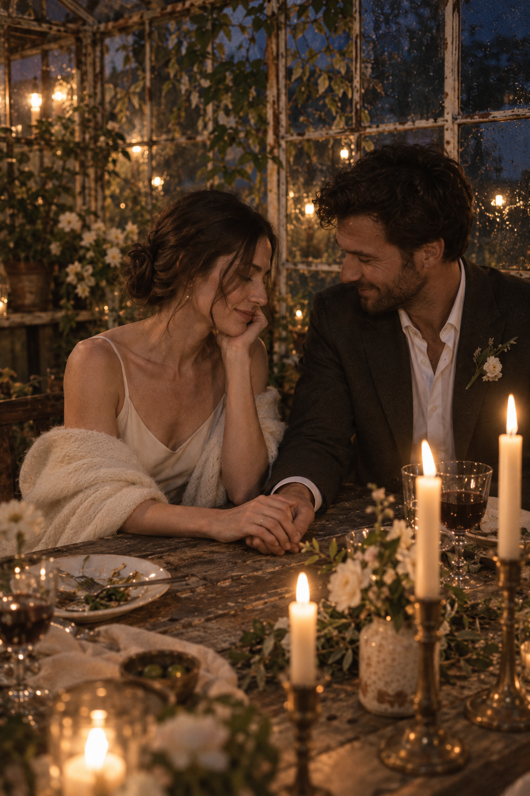

Кадр из нашего воображаемого вечераНаша история ✳ 03Сначала был
Сначала был
разговор, который
не хотелось
заканчивать.
Мы познакомились в дождливый вечер: укрылись под одной крышей и проговорили до закрытия кафе. Теперь у нас есть повод снова задержаться допоздна — уже со всеми вами.
«Пожалуйста, останьтесь на последний танец»